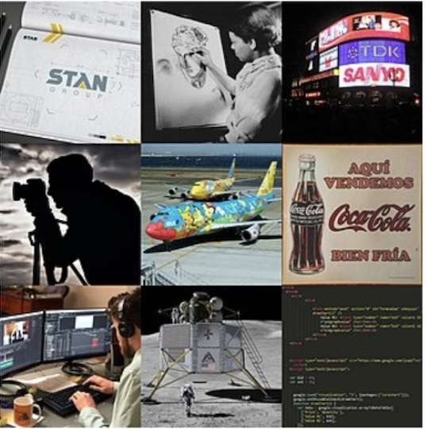

Graphic design is a profession, [2] academic discipline [3] [4] [5] and applied art whose activity consists in projecting visual communications intended to transmit specific messages to social groups, with specific objectives. [6] Graphic design is an interdisciplinary branch of design [1] and of the fine arts. Its practice involves creativity, innovation and lateral thinking unsing manual or digital tools, where it is usual to use text and graphics to communicate visually.
The role of the graphic designer in the communication process is that of the encoder or intrepreter of the message. They work on the interpretation, ordering, and presentation of visual messages. Ussually, graphic design uses the aesthetics of typography and the compositional arrangement of the text, ornamentation, and imagery to convey ideas, feelings, and attitudes beyond what language alone expresses. The design work can be based on a costumer's demand, a demand that ends up being established liguistically, either orally or in writing, that is, that graphic design transforms a linguistic message into a graphic manifestation. [7]